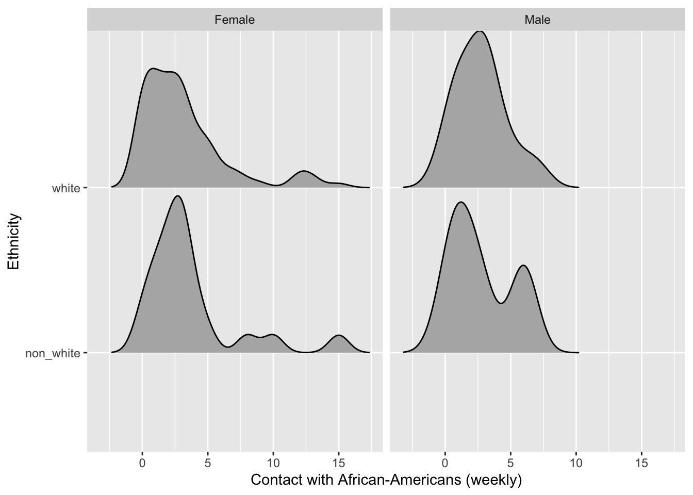
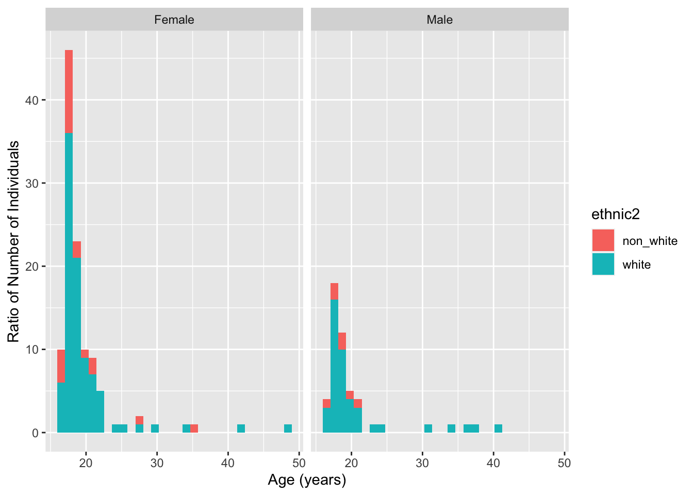
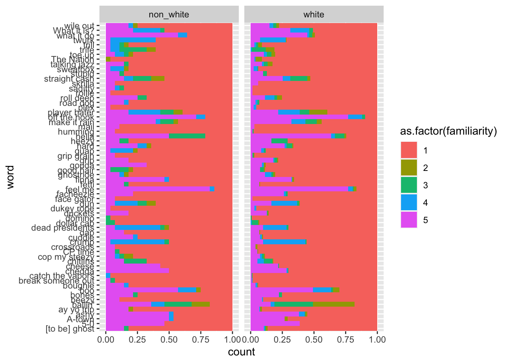
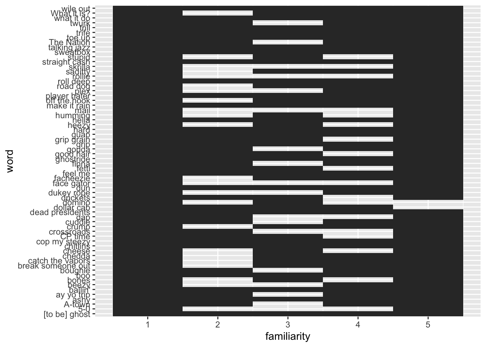

Code
library(RColorBrewer)
library(ggridges)
library(tidyverse)library(RColorBrewer)
library(ggridges)
library(tidyverse)REVISED
This data set is from a study done by a linguist at the University of Minnesota. The participants were students enrolled in undergrad linguistics, sociology, and music classes at that university; so this sample of individuals was not randomly selected. The researcher wanted to predict musical taste based on familiarity with African American English. It studied 64 different African American English words on 168 participants resulting in 10752 observations (rows) and 38 different variables (columns). However, a majority of the variables are not dependent on the word variable, meaning they are repeated 64 times. Many of the variables were a coding scheme was established to transform open set definitions to a five-point Likert scale.
# load in the hiphop data set
hiphop <- read_csv(here::here("supporting_artifacts",
"Labs",
"Lab3",
"hiphop.csv")
)REVISED
Each row is unique to the AAE word variable and all 64 participants answer familiarity questions about each word. Therefore, each participant is repeated 64 times in the rows for each word. The rows contents do address the individual participant’s responses, however, some of the variables (columns) are general questions not associated with the AAE words. So, the individuals and their responses to those variable questions get repeated every word.
Missing values seem to be replaced with zeros and mean values depending on the variable in question. In the data set the variables city, county, countyBlack have some zeros across rows. I suspect that is where an individual did not mention their hometown in the survey. A downside of this, is a lot of the variables have values that includes 0, so it makes it difficult to see which are the missing points, and which are not. An upside is zeros are easy to see in character and large number variables.
There were also some social network variables, all *Move and blackWeekly, that had missing values replaced with mean values. An upside to this replacement is those data points that would have been empty now have a close estimation based on all other data points and fills out the data set. A downside to this is those variables are now are skewed to be more toward the mean value with those replacements.
To clean this data set, I decided to remove all rows with missing values (indicated by 0) in the city, county, countyBlack variables. This removed 6 individuals / 384 rows. Not too sure if this was the right thing to do, some of the data could have been useful even without the individuals location population counts.
I also changed all the variables (columns) where the data was a survey scale response (eg. 1 - 5) into factors. c(jayz:bieber, familiarity, fam1) This will help when evaluating them as categorical values.
hiphop_clean <- hiphop |>
filter(city != 0) |>
mutate(across(c(where(is.character)),
as.factor)
) There are 64 AAE words studied in the data set.
hiphop_clean |>
distinct(word) |>
count() |>
pull()[1] 64Making 2 new variables: white and non_white
hiphop_clean <- hiphop_clean |>
mutate(ethnic2 = if_else(ethnic != "white",
"non_white",
"white")
) |>
mutate(ethnic2 = as.factor(ethnic2)
)Summarizing the demographics of the participants of the study. I used the sex, age, and ethnic2 variables, where the ethnic2 is the new variable I created in the previous question. I decided to output the sum of the sex and ethnic2 categorical variables, so you can see how many of each there were, and a overall summary statistics for the ages in the study.
There were 112 female and 50 male participates, of those 28 were non_white and 134 were white. The mean age of participants was 20 years, minimum 16 and maximum 48 years old.
hiphop_clean |>
distinct(subj, .keep_all = TRUE) |>
select(sex, age, ethnic2) |>
summary() sex age ethnic2
Female:112 Min. :16.00 non_white: 28
Male : 50 1st Qu.:18.00 white :134
Median :19.00
Mean :20.09
3rd Qu.:20.00
Max. :48.00 This first plot shows a comparison between white and non-whites, faceted by sex, and how many African Americans they have contact with each week. Not a huge difference to be seen.
hiphop_clean |>
distinct(subj, .keep_all = TRUE) |>
ggplot(mapping = aes(x = blackWeekly, y = ethnic2)
) +
geom_density_ridges(rel_min_height = 0.0001,
scale = 0.95,
scale = 0.95) +
facet_wrap(~ sex) +
labs(x = "Contact with African-Americans (weekly)",
y = "Ethnicity")
This next graph shows the count of the age of the participants and how many are white vs non-white. Majority are female and white, and majority of non-whites are female.
REVISED
Instead of a bar graph that uses categorical variables I used a histogram. I also though about a dot plot, but that gave an interesting y variable, maxing out at 1.0… This histogram looks exactly like the bar graph however.
hiphop_clean |>
distinct(subj, .keep_all = TRUE) |>
ggplot(mapping = aes(x = age)
) +
geom_histogram(mapping = aes(fill = ethnic2),
binwidth = 1.1) +
facet_wrap(~ sex) +
labs(x = "Age (years)",
y = "Ratio of Number of Individuals")
On average, the most and least familiar words for subjects below the age of 20 were ‘catch the vapors’ and ‘off the hook’, respectively.
hiphop_clean |>
filter(age < 20) |>
select(word, familiarity) |>
group_by(word) |>
summarize(mean_fam = mean(familiarity)
) |>
slice(c(which.min(mean_fam),
which.max(mean_fam))
)# A tibble: 2 × 2
word mean_fam
<fct> <dbl>
1 catch the vapors 1.03
2 off the hook 4.50On average, the most and least familiar words for non-white female subjects were ‘break someone out’ and ‘feel me’, respectively.
hiphop_clean |>
filter(ethnic2 == "non_white",
sex == "Female") |>
select(word, familiarity) |>
group_by(word) |>
summarize(mean_fam = mean(familiarity)
) |>
slice(c(which.min(mean_fam),
which.max(mean_fam))
)# A tibble: 2 × 2
word mean_fam
<fct> <dbl>
1 break someone out 1
2 feel me 4.43On average, the most and least familiar words for white male subjects above the age of 30 were ‘ay yo trip’ and ‘5-0’, respectively.
hiphop_clean |>
filter(ethnic2 == "white",
sex == "Male",
age > 30) |>
select(word, familiarity) |>
group_by(word) |>
summarize(mean_fam = mean(familiarity)
) |>
slice(c(which.min(mean_fam),
which.max(mean_fam))
)# A tibble: 2 × 2
word mean_fam
<fct> <dbl>
1 ay yo trip 1
2 5-0 4.2Figure out which subject could be Bieber. He is a white male, from a relatively small town (10,000-60,000 people) in Ontario would have been 17-23 at the time of the study.
From the output below, I suspect subject 17 could be Bieber. The filter only pulled individuals from the above specifications, and who had the maximum score in the pop culture variable bieber. I figure he would know his own songs…
hiphop_clean |>
distinct(subj, .keep_all = TRUE) |>
filter(ethnic2 == "white",
sex == "Male",
age >= 17,
age <= 23,
city > 10000,
city < 60000) |>
slice_max(bieber) |>
select(subj, sex, age, ethnic)# A tibble: 1 × 4
subj sex age ethnic
<fct> <fct> <dbl> <fct>
1 p17 Male 18 white ________________________
# this is an attempt to plot the familiarity counts in a bar graph.
# Wanted to sort the bargraph, change color, and adjust scale to make
# the words easier to read
hiphop_clean |>
ggplot(mapping = aes(y = word)) +
geom_bar(position = "fill", width = 1, aes(fill = as.factor(familiarity))) +
scale_color_brewer() +
facet_wrap(~ ethnic2)
hiphop_clean |>
ggplot(mapping = aes(y = word, x = familiarity)) +
geom_tile()
# What I originally thought the Familiar Words section was asking...
hiphop_clean |>
filter(age < 20) |>
select(word, familiarity) |>
group_by(word) |>
count(familiarity) |>
group_by(familiarity) |>
slice_max(n)# A tibble: 5 × 3
# Groups: familiarity [5]
word familiarity n
<fct> <dbl> <int>
1 catch the vapors 1 112
2 ballin' 2 43
3 ballin' 3 35
4 crump 4 43
5 off the hook 5 91